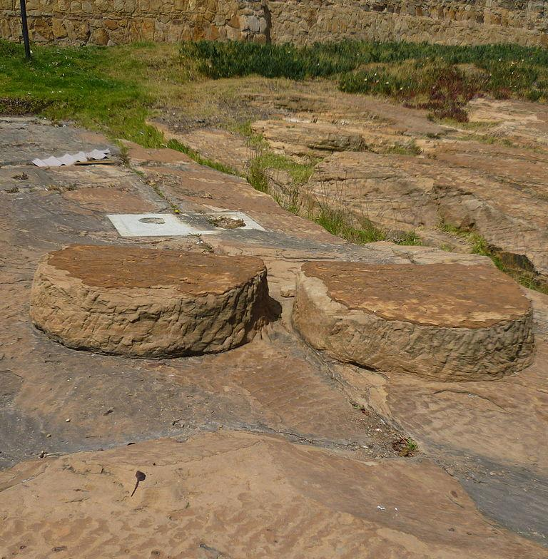

LUGARES TURÍSTICOS
Tunja es uno de los lugares más históricos y ricos culturalmente en Colombia. Por lo cual, dar un vistazo a este lugar es como darnos un viaje en el tiempo a todos los acontecimientos por los cuales ha pasado esta capital. Los sitios los cuales puedes visitar para disfrutar de esta experiencia son:
-
Iglesia de Santo Domingo
El templo de santo domingo es una joya arquitectonica coloquial. La cual cuenta como sus hermosas y artísticas capillas, entre ellas la de Nuestra Señora del Rosario, constituyen un tesoro de arte y decoración de los más representativos y característicos del siglo XVI.

-
La plaza de Bolívar
Esta es la plaza principal de la ciudad, la cual fue declarada como monumento historico colombiano.Por medio del cual podremos encontrar distitos edificios importates del municipio de tunja. En esta plaza también encontraremos una estatua de bronce postrada encima de la piedra en la cual Bolívar se paró para dirigir la batalla del puente de Boyacá.

-
Casa del fundador Gonzales Suárez
La casa del Fundador Gonzalo Suárez Rendón es un museo situado en la zona oriental de la Plaza de Bolívar de Tunja-Colombia. En ella se ubica actualmente la Secretaría de Cultura y Turismo de la Alcaldía Mayor y la Academia Boyacense de Historia (desde 1905). Es la joya arquitectónica más característica de las residencias particulares del siglo XVI, y se conserva la historia privada de la aristocracia tunjuana desde los años de la fundación hispánica de Tunja.

Parque Pinzón
Es un parque urbano, bañado en arboles, arbustos, y lindos jardines los cuales nos permiten disfrutar de un ambiente relajante y sereno.

Santuario del Zaque de Hunza
Es un monumento histórico muisca de procedencia pre-hispánica. Este se basa en 2 piedras en forma de cojín, de los cuales no se tiene registro de su verdadero propósito. Sin embargo, se piensa que era un antiguo monumento con funciones de ceremonias astrológicas.
Puente de Boyacá
Este puente es un monumento declarado Patrimonio Cultural de la Nación. Este mismo, fue escenario de la batalla que libró en Boyacá el 7 de agosto de 1819.

Teatro Maldonado
Este teatro se ha convertido en un referente de la ciudad debido al gran mantenimiento que se le ha dado a este a lo largo de los años. Lo cual, ha logrado que se mantenga una escencia diferente a la hora de presenciar las diversas interpretaciones y obras que se realizan en este.

Catedral Basílica Metropolitana
Esta catedral basilica es la iglesia de culto católico más antigua en Colombia. Este edificio también se encuentra ubicado en la plaza de Bolívar y es considerada el templo principal de arquidiosis en Tunja.

Pozo de Hunzahúa
Es un parque y museo arqueológico de la cultura muisca donde se encuentran diversas lagunas bordeadas por caminos de piedra y adoquín, donde también son visibles las columnas del templo solar de Goranchacha.

Iglesia de San Ignacio
Es una iglesia construida por los jesuitas en el siglo XVII donde actualmente podemos observar como atracción principal la talla polimocrada de cristo crucificado, la estatua de San Antonio en madera y el retablo de nazareno.